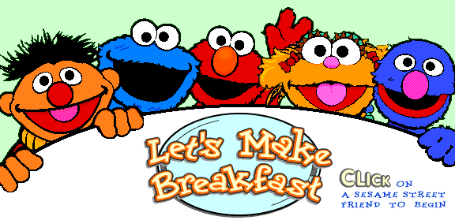
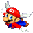
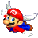
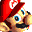
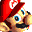
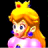
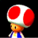
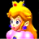
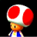

Misc. Downloads

Biohazard Bin Icon


Recreated from the "Word Crimes" music video by Weird Al.
Original design by Jarred Heather.
DOWNLOAD
 2 .ico files zipped (Windows) (4 KB)
2 .ico files zipped (Windows) (4 KB)
.icl (Icon Library) file (28 KB)
.dll file (28 KB)
Let's Make Breakfast
A Shockwave (.dcr) Game

Archived from sesamestreet.com. Files are missing, but what is there works.
DOWNLOAD
.zip file (from archive.org) (672 KB)
Smiley Central Cursors (CursorMania)


Archived from CursorMania (ak.imgfarm.com). Cursors seem to be lower quality than previews, so keep that in mind. (PREVIEW)
DOWNLOAD
.zip file (246 KB)
.zip file (Lefty Smileys) (80.4 KB)
Mario Icons
Archived from an old version of Nintendo of Norway's website (nintendo.no).


 

 



 


DOWNLOAD
25 .ico (Windows Icon) files zipped (43.1 KB)
Mario Party 2 Screensaver
Archived from an old version of Nintendo of Norway's website (nintendo.no).

DOWNLOAD
.exe file (1.81 MB)
.gif "It's actually WACUP, a community modification of Winamp, which I prefer. :P")